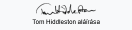
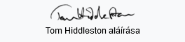
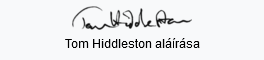
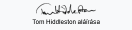

érdekességek
- Vilmos herceggel egy osztályba járt az Eton Főiskolán.
- Az angol mellett több különböző nyelven beszél, például franciául, a spanyolul és olaszul.
- Egy ír bárban megtanult teljesen önállóan zenélni kát kanállal
 


